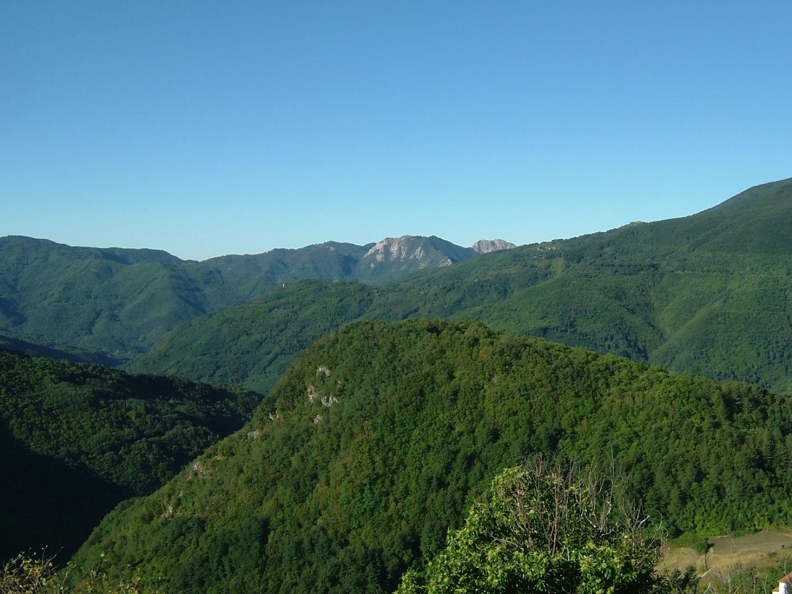

Castel di Mura
Castel di Mura o Castrum de Muris era un castello costruito per controllare il territorio della montagna e la via verso Modena. Nel Trecento il comune di Pistoia fece di questa rocca uno dei punti strategici del suo sistema di difesa.
I resti del castello, oggi in proprietà privata, sono in corso di scavo. Sono stati finora riportati alla luce: il circuito delle mura esterne, la torre, la cisterna e i muri della rocca.
E’ probabile che questo luogo fosse già abitato anche in epoca antica.
Liber Censuum Comunis Pistorii
Le provvisioni del Comune di Pistoia I SEC. XIV
Le provvisioni del Comune di Pistoia II SEC. XIV